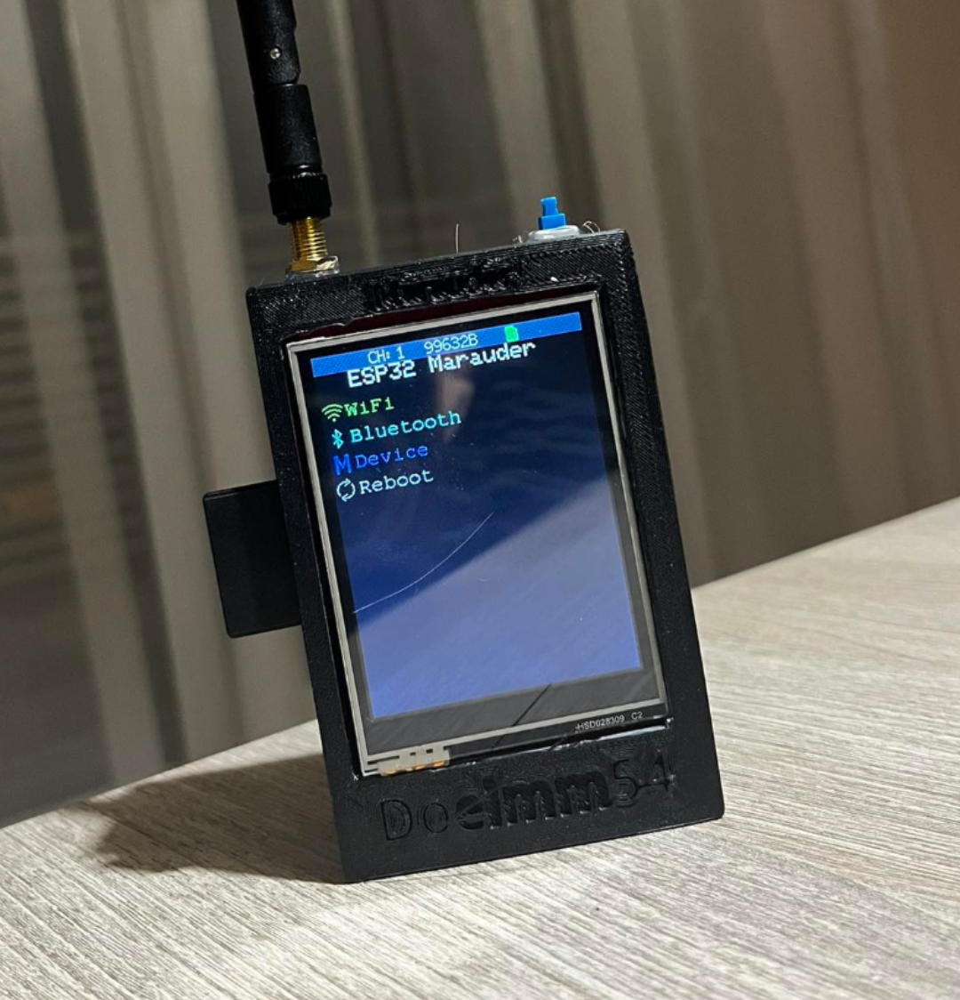
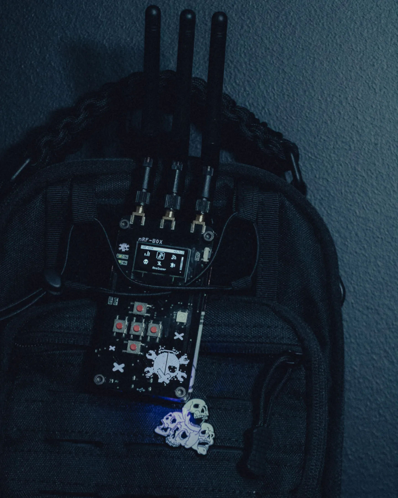
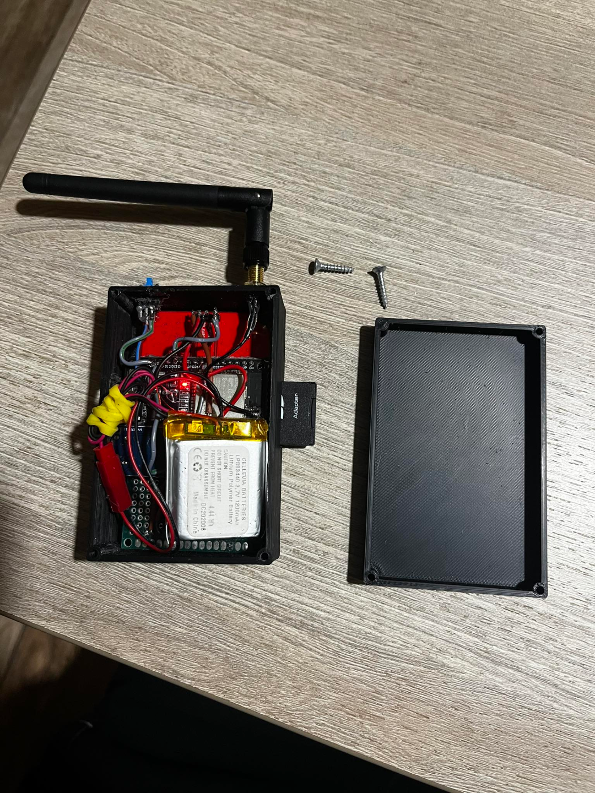
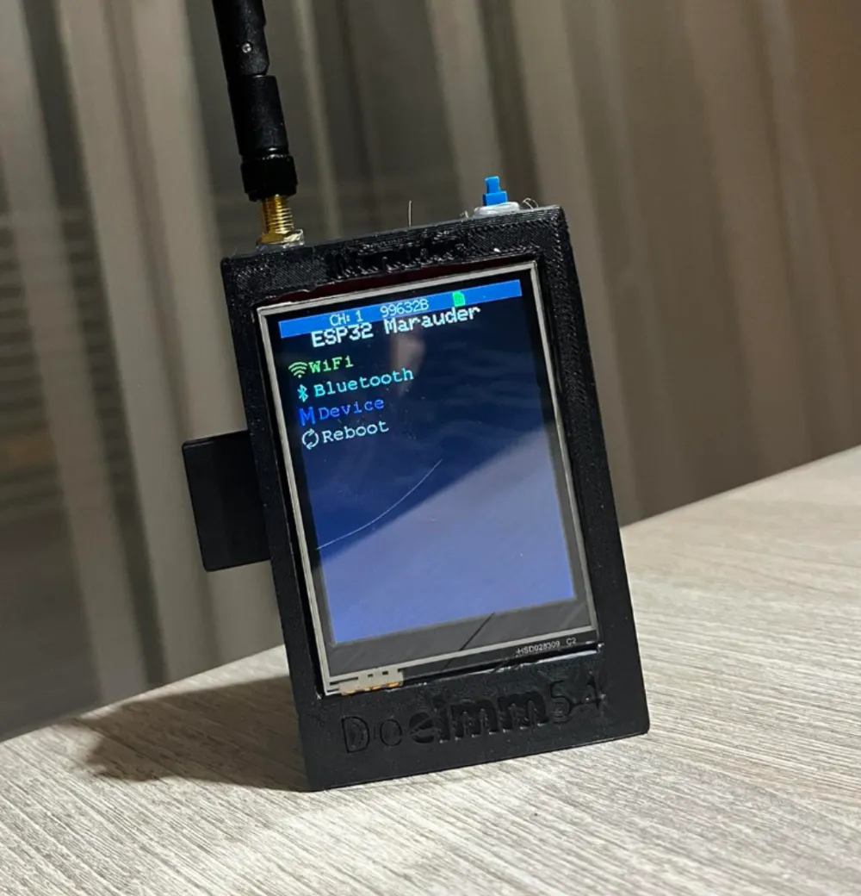

Prerrequisitos
Necesitas tener un ESP32 DIV, cable USB de datos y drivers instalados en tu PC.

Materiales
Firmware Marauder, herramienta de flasheo (esptool.py) y opcionalmente un power bank.

1) Flasheo e instalación
Conecta tu dispositivo y flashea el firmware con los comandos proporcionados.

2) Primeros escaneos
Usa el menú WiFi Scan para detectar redes disponibles.

3) Captura de handshakes
Desde el menú de ataques selecciona Handshake y guarda los resultados en la tarjeta SD.

4) Exportar resultados
Conecta el dispositivo al PC y copia los archivos .pcap.

Buenas prácticas
- Actualiza siempre el firmware a la última versión.
- Haz pruebas únicamente en redes autorizadas.
- Guarda bitácoras de tus experimentos.